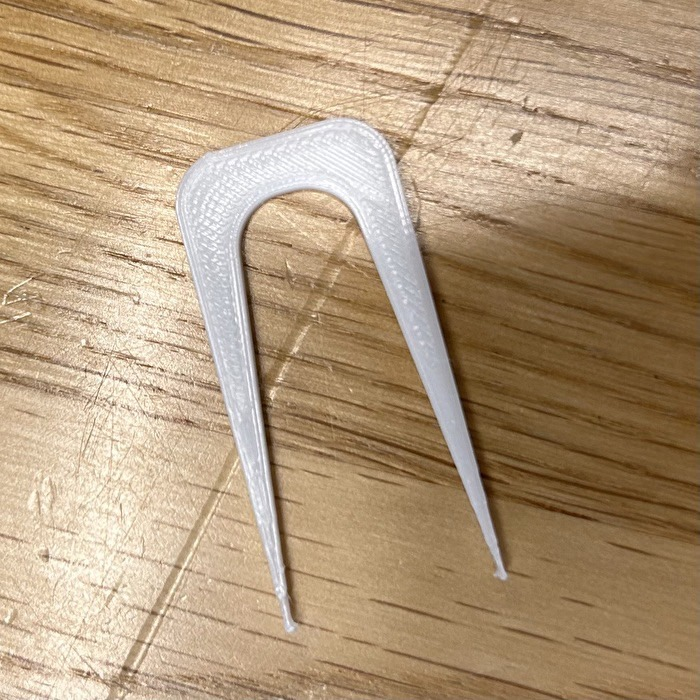
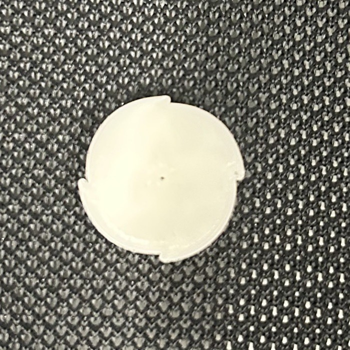
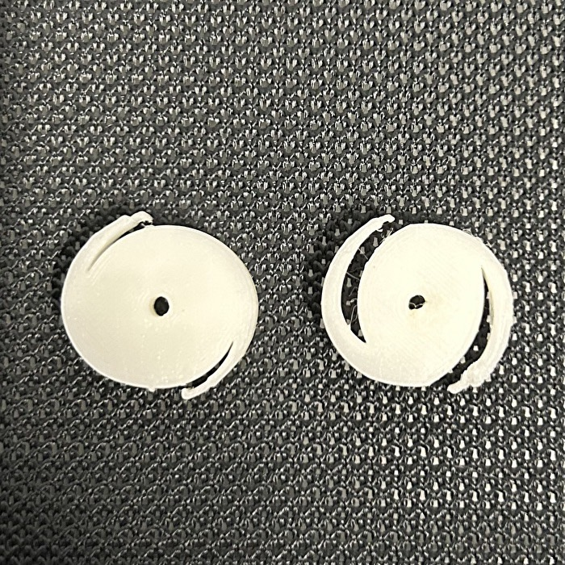
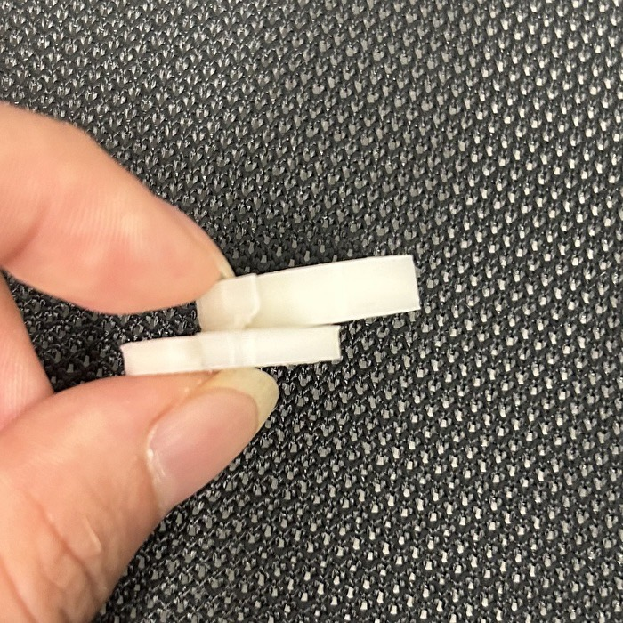
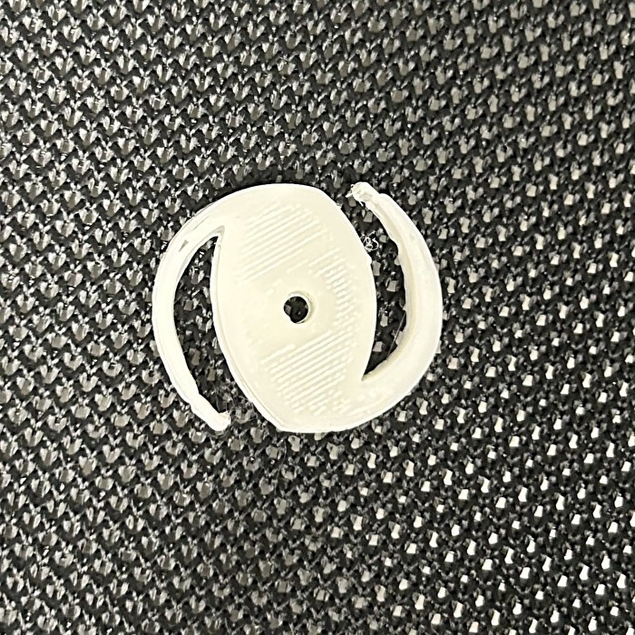
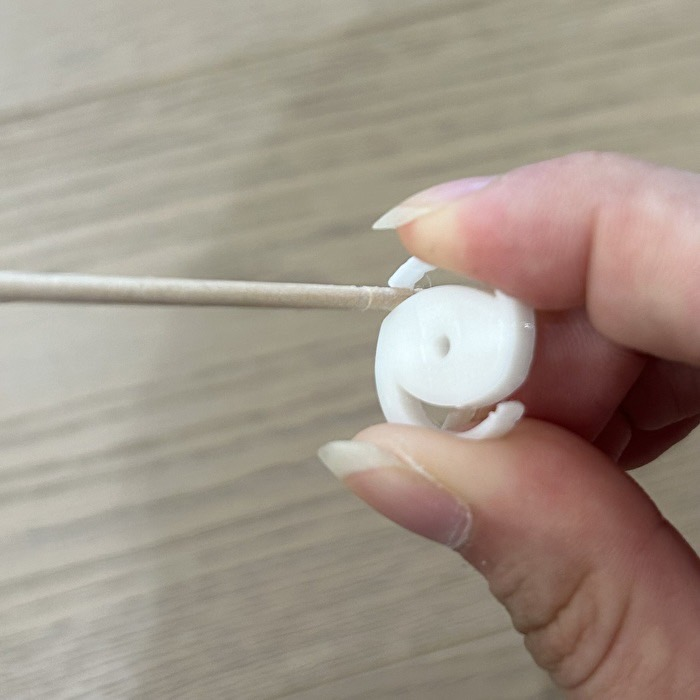
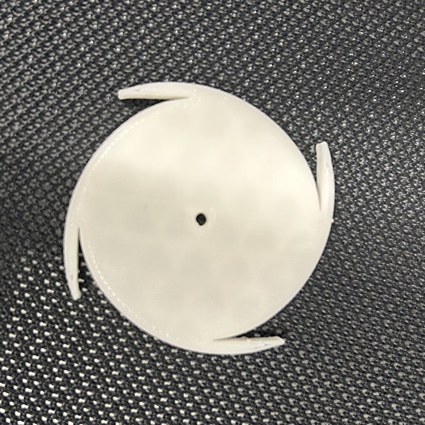
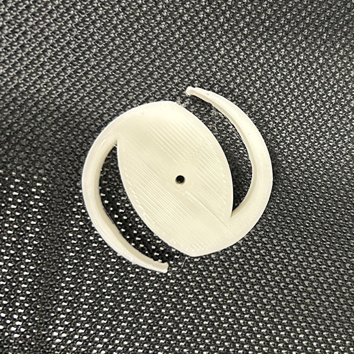

初めての3Dプリンター
第一の壁～発想と現実～
どんなピンセットを作ろうか考えたときに、二回目の授業のときにでたアイデアから何か作ればいいと軽い気持ちで考えていましたが、実際にFusion360にさわってみて悟りました。今の自分の技術じゃアイデアを形に出来ない、、
そこでまず、自分の技術で出来る範囲の進化したピンセットを考えなければいけませんでした。まさかこんなに成形するのが難しいとは思っておらず、本当に完成できるのか不安な気持ちになったのを覚えています。
第二の壁～閉じない～
まずわたしは3Dプリンターがどんなものこのイメージをつかむ為、適当な形のピンセットを作って出力してみることにしました。それで完成したものがこちらです。

閉じません。
わたしはピンセットの構造をまるで理解していませんでした。なんとなくのイメージで作ったところ大失敗。実物はしっかり観察するべきですね。
しかしこの試作品を作ってみて作りたいものを見つけることが出来ました。それが｢こま形のピンセット｣です。
3Dプリンターの素材を触ってみたところ子供の玩具に向いてそうな素材だと思い、そこから着想しました。
第三の壁～大きさの制限～
今回の課題は50mm×20mm×5mmまでと大きさが決まっています。なのでやりたかったこま形のピンセットでは高さが足りず作れませんでした。また、あまりに細かい形は3Dプリンターでは再現できずエラーを起こしてしまいます。なのでミニチュアで作るというのも不可能です。この大きさの制限には大分苦しめられました。それでも私はこま形のピンセットを諦めたくない、！！
そこで、つまようじを刺してこまにする形態にしました。
完成までの道のり
成形方法
第一の壁で話したようにFusion360を使うのはとても難しくてどうやって形を作ろうか大分試行錯誤しました。その様子がスケッチにも残っています。こまなので左右対称にしたくて円の形から削って作ることにしました。真ん中には穴を開けて爪楊枝がさせるようにします。
第一形態
まずはじめにつくったものがこちらです。
直径20mm、高さ5mmで作っています。真ん中には直径1mmの穴を開けてみました。
そして実際に出来た物がこちらです。

ただのコインになりました。。。
つかむ部分があまりにもちいさすぎて上手く生成されなかったのでしょう。爪楊枝も当然入りません。
第二形態
一回目のときにつかむ部分の切り込みが全然足りないことに気づいて四つ同時につかむ夢はそうそうに諦めました。つかむところを二つにして、真ん中の穴も直径2.5mmに変更しました。それで完成した物がこちらです。

はじめに作った右側のこまはまだ切り込みが小さかったので、さらに深く切り込んでもう一度作りました。
爪楊枝のサイズもぴったりでこまとしては完璧ですがピンセットの部分が堅すぎる！！一応閉じますがかなり力を入れないといけません。こんなんじゃ何もつかめないです。
第三形態
前回の反省を生かして次は厚みを変えてみることにしました。今まで5mmだった厚みを3.5mmに変えて作ります。

上手くいきました！
そこから形を整えて完成したのがこちらです。


ぎりつかめます。
どのこまが一番長く回るか選手権
おまけ
同時に四つの物をつかみたい！！ので大きいサイズで作ってみることにしました。それがこちらです。

ただのこまです。形をつくるのが下手すぎますね。あきらめました。
気を取りなをして完成した形を大きいサイズで作ってみました！

まとめ
初めての3Dプリンターだったので完成するまで大分試行錯誤しました。ですがその試行錯誤のおかげで3Dプリンターになれることが出来たので良い経験でした。今後の課題はFusion360での造形をもっとおもった通りにできるようにすることだと思います。いろいろ作って遊びながら上手になっていきたいです。